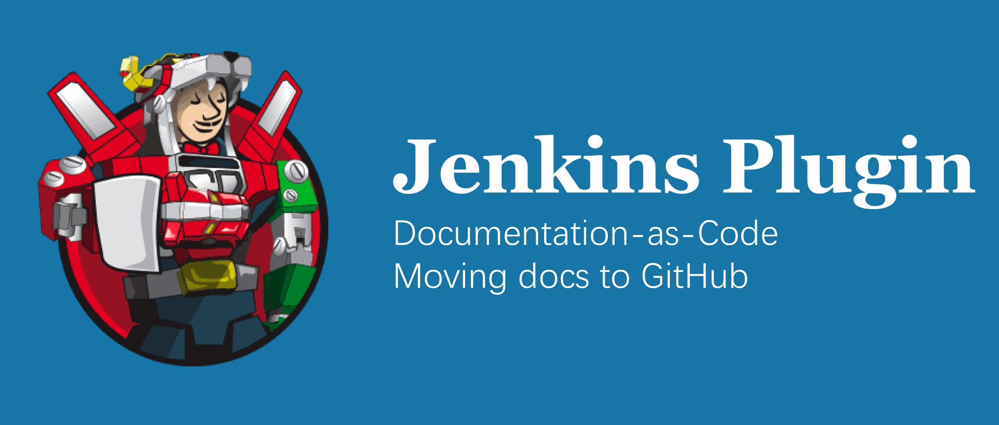
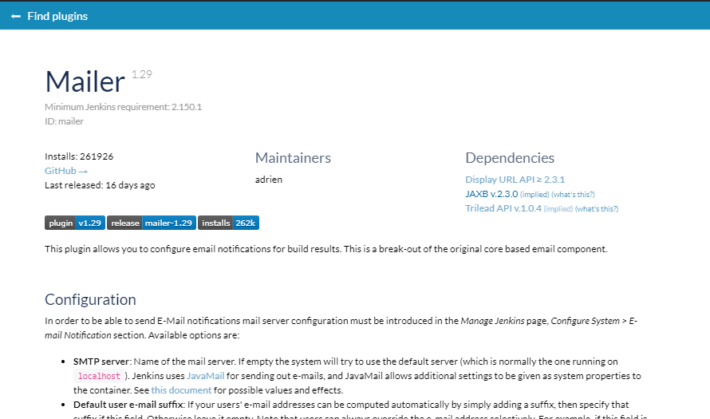
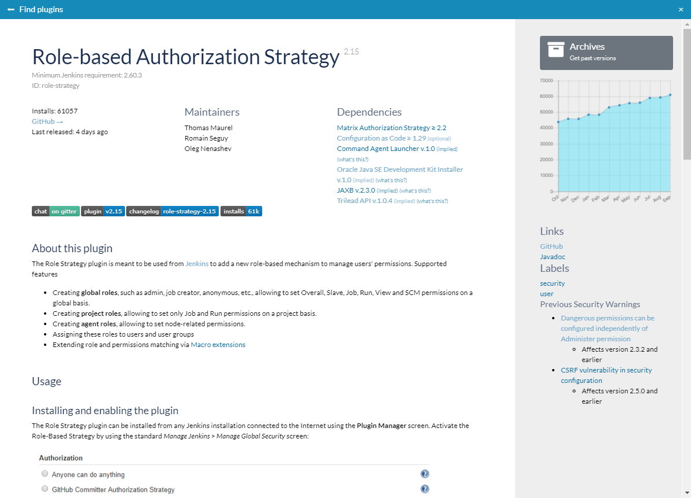

Jenkins 插件文档即代码：将文档迁移到 GitHub

在2019年9月，我们宣布了对 GitHub 作为 Jenkins 插件站点文档来源的支持。 感谢 Zbynek Konecny 和 Olivier Vernin 以及其他贡献者， 现在可以将插件文档直接存储在插件储存库中，而不是 Jenkins Wiki 中，对于插件维护者和 Jenkins 基础设施团队来说，这在过去是很难维护的。
这篇博文可能对插件维护者和那些想为 Jenkins 文档做贡献的人来说很有趣。 我将描述如何将插件文档迁移到 GitHub 并获得如下页面:

为什么？
通过使用插件的 GitHub 仓库存储文档， 插件维护者可以遵循 文档即代码 的方法，将文档更改作为 pull request 的一部分，这样就不会忘记文档的后续工作。 它还提供了一个 review 文档更改以及增加文档贡献者的认可度的机会，尤其是如果 story 与 Release Drafter 结合。
不幸的是，在2019年9月之前，GitHub 文档的使用引起了一些问题。 首先，许多插件维护者已经将他们的文档迁移到 GitHub，这导致了文档的碎片化（Wiki、GitHub、jenkins.io）。 为了解决这个问题，插件维护者仍然需要使用重定向来维护存根 Wiki 页面， 用户不得不花一些时间来找出真正的文档在哪里。 通过支持 GitHub 作为文档来源，我们允许维护者逐步淘汰插件 Wiki 页面，同时改善用户体验。
现在进行迁移还有更紧迫的原因…… 如果你订阅了开发者邮件列表， 你可能还看到了 R. Tyler Croy 关于 Jenkins Wiki 稳定性问题的声明， 并将其设置为只读，作为稳定实例的临时措施邮件列表主题。 虽然功能后来部分恢复了， 基础架构团队一致认为，我们应该逐渐转向替代解决方案。
例子
自从9月份宣布以来，超过50个插件已经从 Wiki 迁移到 GitHub。 几个例子：

如何为你的插件启用 GitHub 文档？
- 将文档从 Wiki 转换到 GitHub Asciidoc 或 Markdown 格式，如果你还没有做。
- 它可以用半自动的方式完成，请看这里的指南。
- 更改 pom.xml 中的
<url>字段，使其指向 GitHub(指南)。 有效链接的例子：https://github.com/jenkinsci/mailer-plugin- 插件站点将使用 GitHub REST API 来提取 READMEhttps://github.com/jenkinsci/ssh-credentials-plugin/blob/master/doc/README.md- 从自定义位置提取插件页面
- 可选：添加徽章到页面，以改善外观和感觉，并为用户提供快速链接。 变更日志、聊天室、插件站点和安装量都有标准的徽章。
- 发布新的插件版本
- 等待几个小时，直到更改传播。 之后，Jenkins 插件站点将会展示来自 GitHub 的新文档。
下一步？
这个 story 被跟踪为 WEBSITE-406，它是使用 GitHub 作为 Jenkins 插件站点和更新管理器（WEBSITE-637）数据源的更广泛子项目的一部分。 后面的步骤包括支持显示来自 GitHub release 的变更日志，从 GitHub 中提取插件标签，显示插件 logo， 以及使用 Repository Permission Updater 作为维护者信息的来源。
如何贡献？
10月是一个贡献的好机会！ 插件文档是 Hacktoberfest 活动中的一个特色项目， 我们欢迎所有对文档和代码库的贡献。
为文档做贡献
我们正在寻找有兴趣改进插件文档并帮助我们从 Wiki 迁移到 GitHub 的贡献者。 对于几十个插件来说，文档已经在 GitHub 中，欢迎你针对任何仓库提交 pull request。
迁移文档：
如果你有任何关于贡献文档的问题， 请查看这个页面或者在 Docs SIG Gitter 聊天室联系我们。
贡献代码
您想用 Java 或 JavaScript 编写一些代码吗？ 或者你愿意致力于 CSS 样式并改进 Jenkins 的设计吗? 在这种情况下，欢迎向 Jenkins 插件站点做贡献。 这是我们自己的插件市场实现，我们邀请对这个领域的贡献。 这个插件站点很容易开发。
- WEBSITE-637 - 用于插件站点以及 GitHub 集成的 Epic
- jenkins-infra/plugin-site - 前端 （JavaScript、React、XSS、YARN）
- jenkins-infra/plugin-site-api - 插件站点 API 和 Docker 包（Java、Maven、Docker）